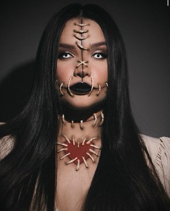
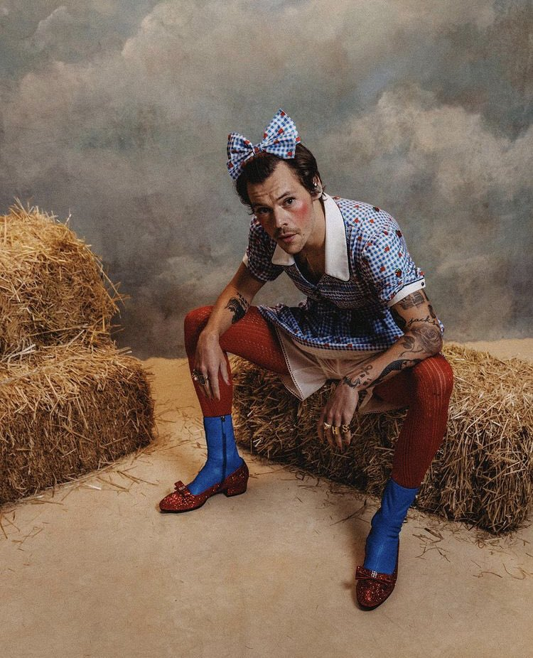
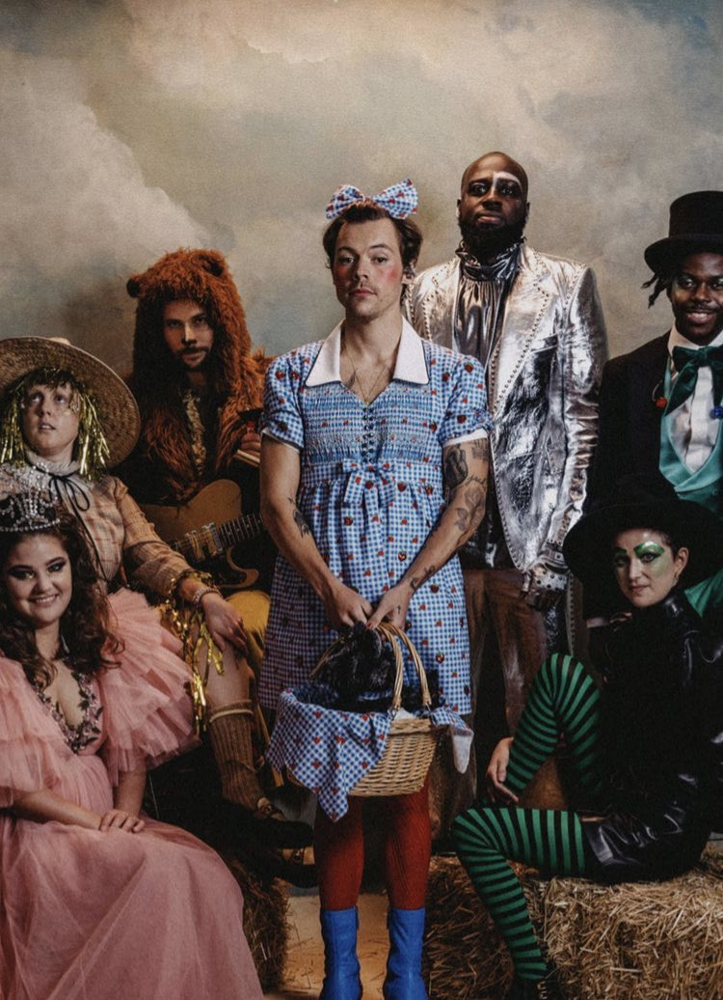

Página Inicial
Usuario

@usuario - 1h
UAU! Juliette com a sua maquiagem para o Halloween!

1,2 mil
3,5 mil
35,1 mil
Usuario
@usuario - 1h
Harry Styles e a sua fantasia para esse Halloween, inspirada no clássico “O Mundo Mágico de Oz”


624
2,9 mil
16,9 mil
Usuario
@usuario - 1h
Katy Perry e Orlando Bloom fantasiados de vacina e médico para o Halloween!
624
2,9 mil
22,7 mil
Tendências de Brasil
1 . Assuntos do Momento
#HondaPatrocinaOBotafogo
50,8 mil Tweets
Some placeholder content for the first collapse component of this multi-collapse
example. This panel is hidden by default but revealed when the user activates the
relevant trigger.
2 . Assuntos do Momento
Watermelon Sugar
23,4 mil Tweets
Some placeholder content for the first collapse component of this multi-collapse
example. This panel is hidden by default but revealed when the user activates the
relevant trigger.
3 . Assuntos do Momento
Tove
4,665 Tweets
Some placeholder content for the first collapse component of this multi-collapse
example. This panel is hidden by default but revealed when the user activates the
relevant trigger.
4 . Assuntos do Momento
#BolsonaroSalvouOBrasil
47,6 mil Tweets
Some placeholder content for the first collapse component of this multi-collapse
example. This panel is hidden by default but revealed when the user activates the
relevant trigger.